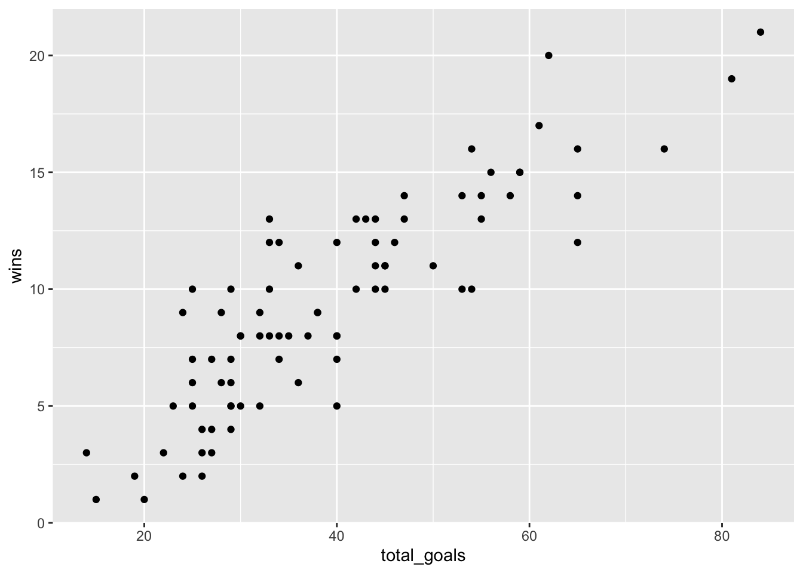
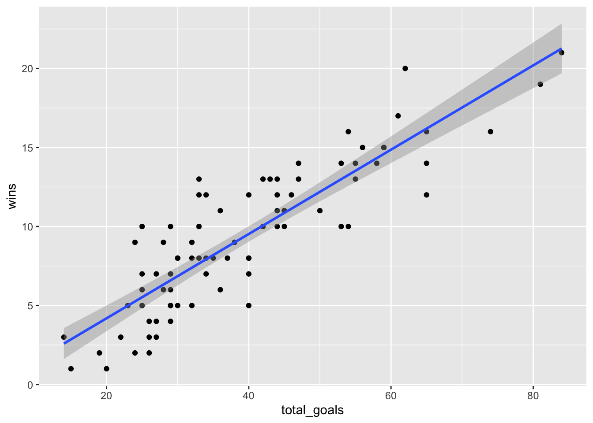
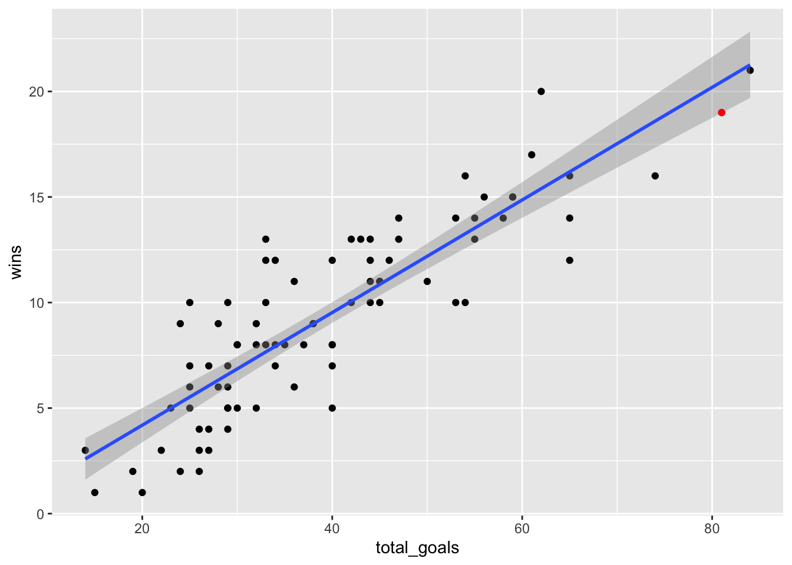
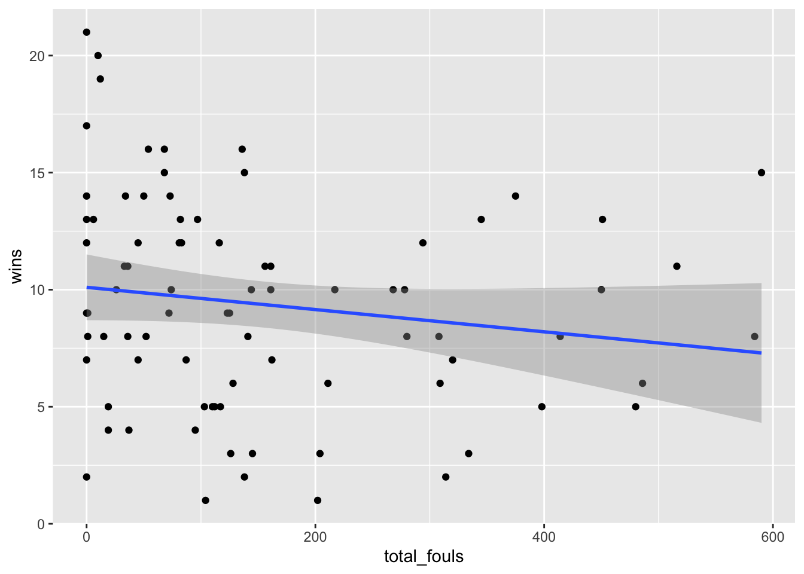

library(tidyverse)22 Scatterplots
With the exception of those curmudgeons who love defense, everybody loves scoring. We enjoy blowout games (when our teams win) and bemoan low-scoring affairs. While scoring is a necessary condition for winning, it’s not the only one. Plenty of bad teams score a lot - they just happen to give up more runs or points or goals.
So how do we tell if a team that wins 10-1 is better than a team that wins 2-1? How can we test the ingredients of success and determine what’s a significant factor and what’s a hot take?
This is what we’re going to start to answer today. And we’ll do it with scatterplots and regressions. Scatterplots are very good at showing relationships between two numbers.
To demonstrate this, we’ll look at college field hockey from the 2022 season, and we’ll see how scoring and wins are related.
First, we need libraries and every college field hockey game from the last season. What we’re interested in is less about a specific team and more about a general point: Are these numbers related and by how much? What can they tell you about your team in general?
For this walkthrough:
Load the tidyverse.
And the data.
logs <- read_csv("data/fieldhockey22.csv")Rows: 1532 Columns: 47
── Column specification ────────────────────────────────────────────────────────
Delimiter: ","
chr (4): team, opponent, home_away, result
dbl (40): team_score, opponent_score, goals, ast, sh_att, so_g, fouls, rc, ...
lgl (2): g_loss, defensive_g_loss
date (1): date
ℹ Use `spec()` to retrieve the full column specification for this data.
ℹ Specify the column types or set `show_col_types = FALSE` to quiet this message.This data is game-level, and we need to create a dataframe of all teams and their season stats. How much, team to team, does a thing matter? That’s the question you’re going to answer.
In our case, we want to know how much does scoring relate to wins? How much difference can we explain in wins by knowing how many goals a team scored? We’re going to total up the number of goals each team scored and their season wins in one swoop.
To do this, we need to use conditional logic – case_when in this case – to determine if the team won or lost the game. In this case, we’ll create a new column called winloss. Case when statements can be read like this: When This is True, Do This. This bit of code – which you can use in a lot of contexts in this class – uses the grepl function to look for the letter W in the result column and, if it finds it, makes winloss 1. If it finds an L, it makes it 0. Sum your winloss column and you have your season win total.
winlosslogs <- logs %>%
mutate(
winloss = case_when(
grepl("W", result) ~ 1,
grepl("L", result) ~ 0)
)Then we can create our aggregate dataframe by adding up the wins and goals:
goals_wins <- winlosslogs %>%
group_by(team) %>%
summarise(
wins = sum(winloss),
total_goals = sum(goals)
) %>% na.omit()Now let’s look at the scatterplot. With a scatterplot, we put what predicts the thing on the X axis, and the thing being predicted on the Y axis. In this case, X is our goals, y is our wins.
ggplot() + geom_point(data=goals_wins, aes(x=total_goals, y=wins))
Let’s talk about this. Ok, there’s really a clear pattern here - as goals increase, so do wins, generally. But can we get a better sense of this? Yes, by adding another geom – geom_smooth. It’s identical to our geom_point, but we add a method to the end, which in this case we’re using the linear method or lm.
ggplot() +
geom_point(data=goals_wins, aes(x=total_goals, y=wins)) +
geom_smooth(data=goals_wins, aes(x=total_goals, y=wins), method="lm")`geom_smooth()` using formula = 'y ~ x'
A line climbing from left to right is good. It means there’s a solid positive relationship here. The numbers don’t suggest anything. Still, it’s worth asking: can we know exactly how strong of a relationship is this? How much can goals scored explain wins? Can we put some numbers to this?
Of course we can. We can apply a linear model to this – remember Chapter 9? We’re going to create an object called fit, and then we’re going to put into that object a linear model – lm – and the way to read this is “wins are predicted by opponent threes”. Then we just want the summary of that model.
fit <- lm(wins ~ total_goals, data = goals_wins)
summary(fit)
Call:
lm(formula = wins ~ total_goals, data = goals_wins)
Residuals:
Min 1Q Median 3Q Max
-4.5252 -1.6912 0.0082 1.3578 5.3418
Coefficients:
Estimate Std. Error t value Pr(>|t|)
(Intercept) -1.14326 0.70724 -1.617 0.11
total_goals 0.26671 0.01683 15.851 <2e-16 ***
---
Signif. codes: 0 '***' 0.001 '**' 0.01 '*' 0.05 '.' 0.1 ' ' 1
Residual standard error: 2.23 on 80 degrees of freedom
Multiple R-squared: 0.7585, Adjusted R-squared: 0.7555
F-statistic: 251.3 on 1 and 80 DF, p-value: < 2.2e-16Remember from Chapter 9: There’s just a few things you really need.
The first thing: R-squared. In this case, the Adjusted R-squared value is 0.7555, which we can interpret as the number of goals a team scores predicts about 75 percent of the variance in wins. Pretty good!
Second: The P-value. We want anything less than .05. If it’s above .05, the difference between them is not statistically significant – it’s probably explained by random chance. In our case, we have 0.00000000000000022, so this isn’t random chance. Which makes sense, because it’s harder to win when you don’t score.
Normally, we’d stop here, but let’s look at the third element: The coefficient. In this case, the coefficient for total_goals is 0.26671. What this model predicts, given that and the intercept of -1.14326, is this: For every goal you score, you add about .26 towards your wins total. So if you score 50 goals in a season, you’ll be a 12-win team. Score 80, you’re closer to a 20-win team, and so on. How am I doing that? Remember your algebra and y = mx + b. In this case, y is the wins, m is the coefficient, x is the number of goals and b is the intercept.
Let’s use Maryland as an example. They scored 81 goals last season.
y = 0.26671 * 81 + -1.14326 or 20.4 wins
How many wins did Maryland have? 19.
What does that mean? It means that Maryland slightly under-performed, according to this model, but not by much. Seems like goals is a pretty good predictor for Maryland. Where is Maryland on the plot? We know we can use layering for that.
umd <- goals_wins %>% filter(team == "Maryland Terrapins, Terps")ggplot() +
geom_point(data=goals_wins, aes(x=total_goals, y=wins)) +
geom_smooth(data=goals_wins, aes(x=total_goals, y=wins), method="lm") +
geom_point(data=umd, aes(x=total_goals, y=wins), color="red")`geom_smooth()` using formula = 'y ~ x'
Maryland’s not the most interesting team on this plot, though.
22.1 Let’s see it fail
Scatterplots also are useful for shooting down the hottest of takes. What about fouls? Are they related to wins in field hockey?
fouls_wins <- winlosslogs %>%
group_by(team) %>%
summarise(
wins = sum(winloss),
total_fouls = sum(fouls)
) %>%
na.omit()Now we can chart it and see what our relationship looks like.
ggplot() +
geom_point(data=fouls_wins, aes(x=total_fouls, y=wins)) +
geom_smooth(data=fouls_wins, aes(x=total_fouls, y=wins), method="lm")`geom_smooth()` using formula = 'y ~ x'
The downward slope from left to right indicates a negative relationship - the more fouls a team commits, the fewer wins it has. But the line here isn’t very steep at all, and you can see the dots spread widely around the plot. So there’s some kind of relationship, but how strong is it?
Let’s get our linear regression stats.
foulsfit <- lm(wins ~ total_fouls, data = fouls_wins)
summary(foulsfit)
Call:
lm(formula = wins ~ total_fouls, data = fouls_wins)
Residuals:
Min 1Q Median 3Q Max
-8.6068 -3.0455 -0.0555 3.1984 10.8989
Coefficients:
Estimate Std. Error t value Pr(>|t|)
(Intercept) 10.101065 0.705584 14.316 <2e-16 ***
total_fouls -0.004753 0.003253 -1.461 0.148
---
Signif. codes: 0 '***' 0.001 '**' 0.01 '*' 0.05 '.' 0.1 ' ' 1
Residual standard error: 4.478 on 80 degrees of freedom
Multiple R-squared: 0.02598, Adjusted R-squared: 0.01381
F-statistic: 2.134 on 1 and 80 DF, p-value: 0.148The p-value is a fair bit above 0.05, so the impact of fouls to wins (or losses) could just be random. The adjusted R-squared is all of 1 percent. We’ve do not have something here. Let’s use our coefficients to look at Maryland’s 2022-23 season.
(-0.004753 * 12) + 10.101065[1] 10.04403This model says that based only on Maryland’s fouls, they should have won 10 games. They won 19. Maybe not a great model for many teams.
The power in combining scatterplots + regression is that we can answer two questions: is there a relationship, and how meaningful is it?